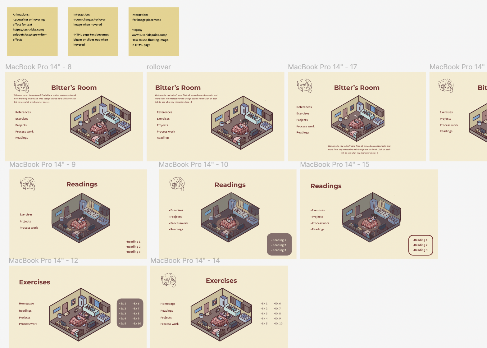
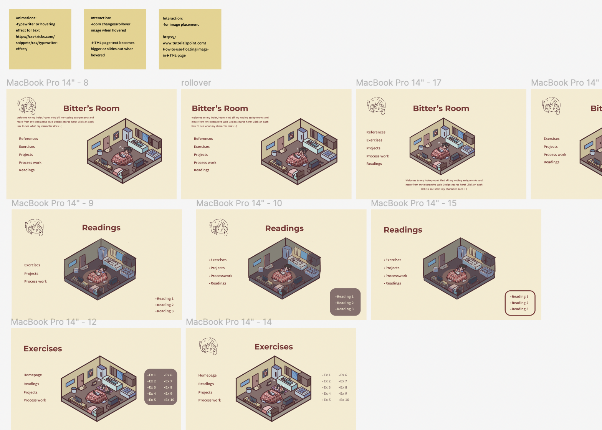

Visual Research
After going on Pinterest near the start of the term, I complied imagery I wanted to experiment with artistically and source website ideas from. I came across many photos of food and it developed into the art of isometric buildings and rooms. Rooms were a way to express my personality in showing the objects I owned/wanted to own. I also wanted showcased my personality with how I experienced each catagory with my character's reactions. Using Procreate, I used the monoline pen and drew all of the illustrations.

Figma and Sketches
I ended up trying ideas like "shopping with me" but ended up choosing to show myself in a small room. I recieved critique to make my layout more interactive tool so I made icons instead of a list with links for each category. I developed the idea of making hover the main interactive as a way to showcase my own artstyle. From a previous assignment, I got the code professer Shaheer. He gave me the Javascript code on how to show a before and after image so I decided to utilize what I learned from last term.
 

Coding Production
I first tried utilizing grid and ended up making my index's spacing too far. I reached out to peers for advice and soon resolved it. The layout looked too empty so I wanted to add a typewriter animation to my titles to enact the feeling of entering a game. Some games I played like "Pocket Life" had a similar style and the animation would add on to the "game effect" of my index. In addition, I added a health, energy, and bubble tea bar to add onto the effect as well.